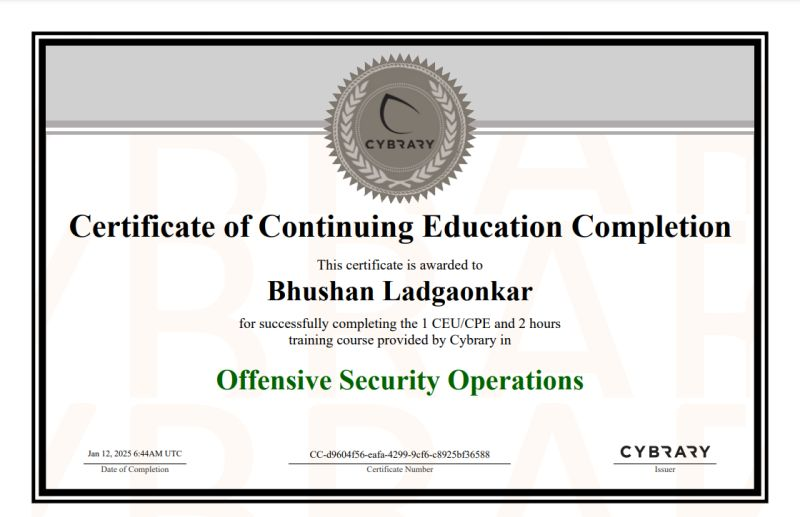
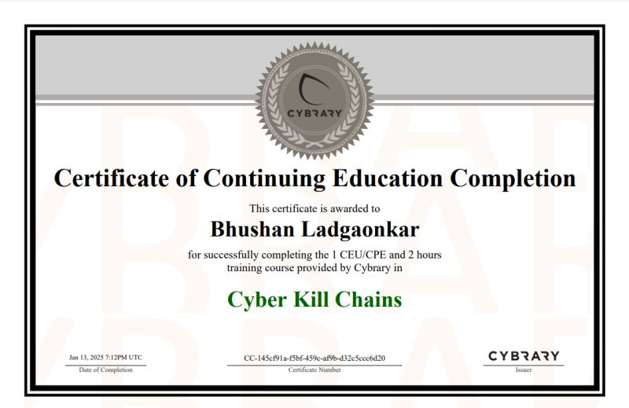
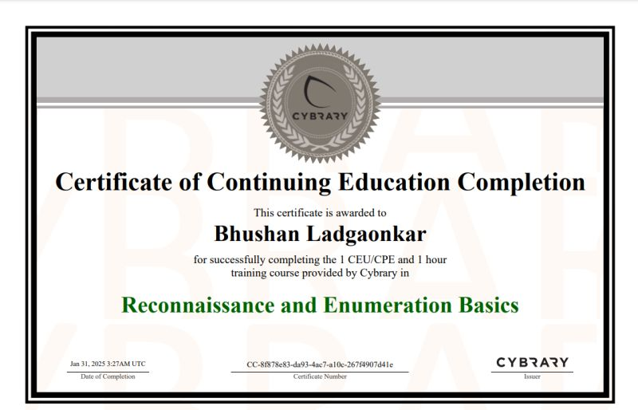

Coding Languages
Backend Technologies
Software Developer
Developed a scalable data collection service using Django for a community-managed Cultural Calendar and crafted a deployable solution.

Internship at ONGC
In today's digital landscape, traditional signature-based intrusion detection systems often fail to detect novel and polymorphic (zero-day) attacks. This project addresses this critical security gap by building a data-driven NIDS that learns from network patterns to identify threats.
The dataset used for this project is the UNSW-NB15 dataset, created by the Cyber Range Lab of the Australian Centre for Cyber Security (ACCS). It is widely used as a benchmark for evaluating NIDS performance.
The core challenge was to design and implement a machine learning pipeline capable of accurately classifying network traffic on the complex, high-dimensional, and severely imbalanced UNSW-NB15 dataset. The system needed to effectively distinguish between normal traffic and a wide range of modern cyberattacks, overcoming the limitations of static, rule-based systems.
TailsOS Live USB Project
While setting up TailsOS, learned about .iso, .image, and various Linux operating system versions. Explored concepts like Persistence, Amnesic storage, and anonymity.
Certificates
Cybrary
Developed practical skills in identifying vulnerabilities and simulating real-world attacks through Cybrary's Offensive Security Operations course.
Gained a practical understanding of the Cyber Kill Chain methodology, enabling me to analyze attack stages and implement effective defense strategies.
Honed practical skills in Open Source Intelligence gathering techniques for effective information reconnaissance and threat analysis.

Acquired foundational practical skills in reconnaissance and enumeration, crucial for identifying target systems and potential entry points.
